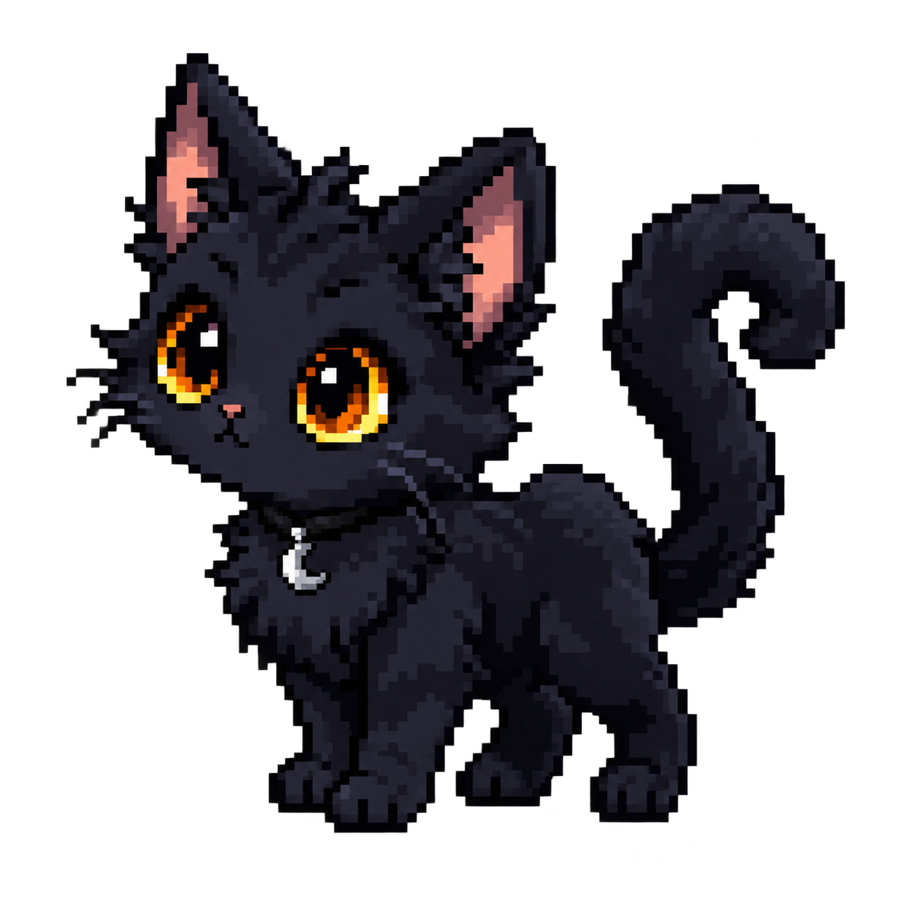
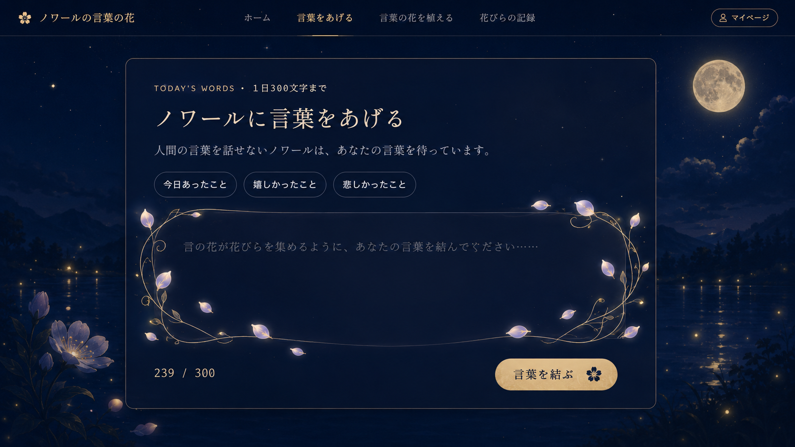

NOIR & THE FLOWER OF WORDS
ノワールの言葉の花
つぼみ · 0 / 10000文字
ここは、言葉が花になる月明かりの庭。
かつて魔女が育てた「言の花」は、人の言葉を糧に咲く不思議な花。もう一度その花を見たいノワールは、人の言葉を話せません。だから、この庭を訪れた魔女であるあなたの胸にある言葉を、静かに待っています。
ミニゲーム星あつめ
ノワール
ニャ、ニャニャ……（魔女さん。あなたの言葉なら、きっと「言の花」が咲くよ）

TODAY'S WORDS · 1日300文字まで
言の花に言葉をあげる
ここは日記ではなく、今の気持ちを言の花へ渡す場所です。書いた内容は記録されず、花を育てる文字数だけが積み重なります。何も考えず、いま吐き出したい言葉をそのまま置いていってください。

言の花に言葉をあげる
0 / 300